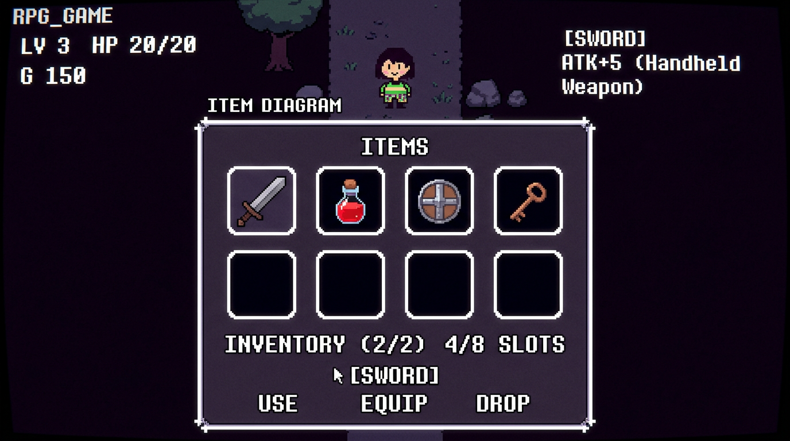

🎮 이 단원이 게임에서 쓰이는 곳 (언더테일·RPG)
정렬 = 인벤토리 정렬에 그대로 씁니다. "이름순", "가격순", "획득 순", "등급순"처럼 아이템 목록을 한 줄로 재배치할 때 비교·교환 방식(버블·선택·삽입)과 같은 생각이에요. 정렬된 데이터는 이진 탐색으로 아이템 ID·이름을 빨리 찾을 수 있어서, 게임 데이터 테이블을 미리 정렬해 두는 경우가 많아요.

정렬(Sort)이란?
한 줄로 된 자료를 어떤 기준에 맞게 다시 배치하는 거예요.
- 오름차순: 작은 것부터 (1, 2, 3, …)
- 내림차순: 큰 것부터 (…, 3, 2, 1)
왜 배우나요?
정렬된 데이터는 이진 탐색으로 빨리 찾을 수 있어요. 프로그래밍기능사 필기·실기 모두 "한 단계 지나면 배열이 어떻게 되나요?", "비교·교환 횟수" 같은 문제가 나와요.
정렬 방법의 구분
선형 구조 정렬: 배열을 한 줄로 두고 비교·이동하는 방식 (버블, 선택, 삽입). 비선형 구조 정렬: 트리 등을 이용 (퀵, 병합, 힙). 먼저 버블·선택·삽입을 확실히 익히면 돼요.
버블·선택·삽입 실습은 다음 강의에서 해요. 2. 버블·선택·삽입